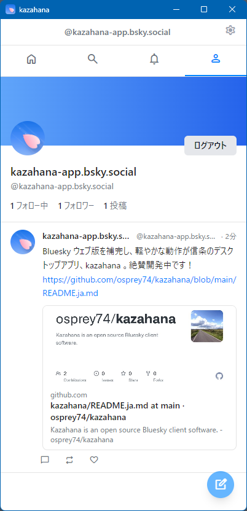
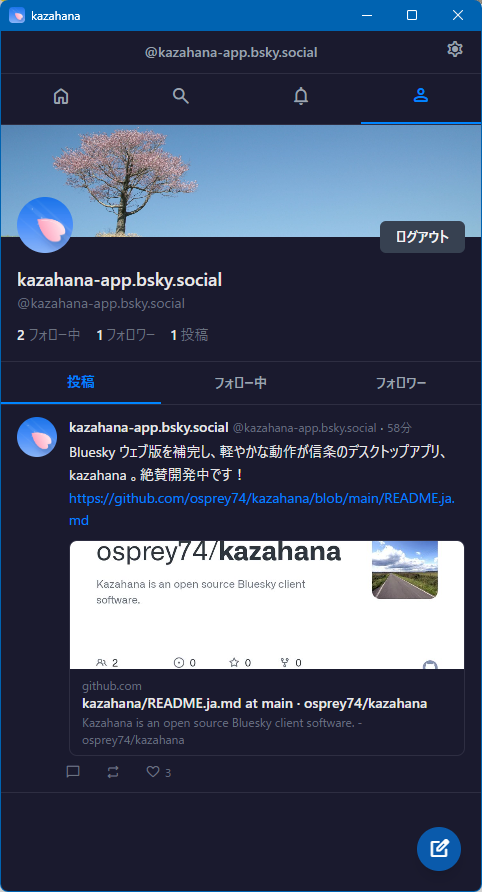

kazahana は軽量なBlueskyデスクトップクライアントです。
OSネイティブの技術で、メモリ消費を最小限に。
あなたのBluesky体験を、もっとシンプルに。
無料・オープンソース（MIT License）
help インストールガイド — 初回インストール時のセキュリティ警告への対処方法
日常のBluesky体験をもっと快適にする4つの特徴
OS標準のWebViewを活用し、メモリ消費をPWA比で大幅削減。長時間の利用でもPCが重くなりません。
ネイティブアプリならではの起動速度。タイムラインの読み込みもスムーズで、待ち時間なく快適に閲覧できます。
1カラムのすっきりしたUI。タイムライン、投稿、通知、検索、プロフィール — 必要な機能はすべて揃っています。
日本語・英語をはじめ11言語をサポート。世界中のBlueskyユーザーが母国語で使えます。
kazahana で利用できる機能の一覧です
シンプルで見やすいインターフェース。ダークモードにも対応しています。

ライトモード

ダークモード
kazahana は Windows と macOS に対応しています。
すべてのバージョンは GitHub Releases からダウンロードできます。
help インストールガイド — 初回インストール時のセキュリティ警告への対処方法
kazahana はオープンソースプロジェクトです。開発の継続を支援していただける方は、以下からご協力をお願いします。
バグ報告や機能リクエストは GitHub Issues へ。
その他のお問い合わせは kazahana.app@gmail.com までご連絡ください。